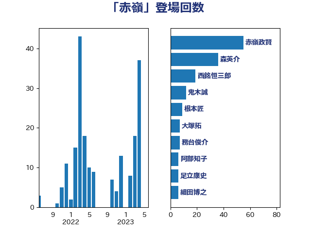

単語「赤嶺」

| 赤嶺政賢 | 日本共産党 | 55 回 |
| 森英介 | 自由民主党 | 36 回 |
| 西銘恒三郎 | 自由民主党 | 19 回 |
| 鬼木誠 | 立憲民主党 | 12 回 |
| 根本匠 | 自由民主党 | 9 回 |
| 大塚拓 | 自由民主党 | 7 回 |
| 務台俊介 | 自由民主党 | 7 回 |
| 阿部知子 | 立憲民主党 | 6 回 |
| 足立康史 | 日本維新の会 | 6 回 |
| 細田博之 | 自由民主党 | 6 回 |
| 山口俊一 | 自由民主党 | 4 回 |
| 馬場伸幸 | 日本維新の会 | 3 回 |
| 田村貴昭 | 日本共産党 | 2 回 |
| 玉木雄一郎 | 国民民主党 | 2 回 |
| 松木けんこう | 立憲民主党 | 2 回 |
| 島尻安伊子 | 自由民主党 | 2 回 |
| 小野泰輔 | 日本維新の会 | 2 回 |
| 奥野総一郎 | 立憲民主党 | 2 回 |
| 鈴木隼人 | 自由民主党 | 1 回 |
| 西村智奈美 | 立憲民主党 | 1 回 |
| 篠原孝 | 立憲民主党 | 1 回 |
| 石破茂 | 自由民主党 | 1 回 |
| 田村智子 | 日本共産党 | 1 回 |
| 熊田裕通 | 自由民主党 | 1 回 |
| 海江田万里 | 立憲民主党 | 1 回 |
| 浜田靖一 | 自由民主党 | 1 回 |
| 杉本和巳 | 日本維新の会 | 1 回 |
| 岡田直樹 | 自由民主党 | 1 回 |
| 大石あきこ | れいわ新選組 | 1 回 |
| 大島敦 | 立憲民主党 | 1 回 |
| 吉田豊史 | 無所属 | 1 回 |
| 北神圭朗 | 無所属 | 1 回 |
| 井上哲士 | 日本共産党 | 1 回 |